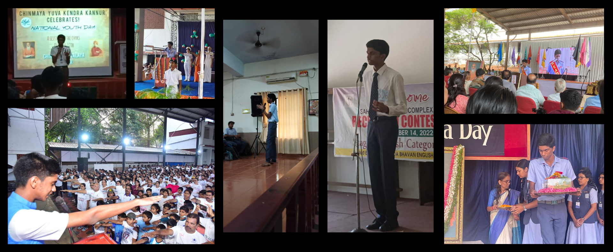

Ankith Abhayan
Ankith Abhayan
About Me
I’m Ankith Abhayan, a student at Amrita Vishwa Vidyapeetham, Amritapuri, with a strong passion for programming, problem solving, cryptography, and cybersecurity. I’ve always been fascinated by logical thinking and abstract reasoning, which naturally led me to develop a deep interest in mathematics. I enjoy diving into complex systems, understanding how things work beneath the surface, and crafting thoughtful solutions to challenging problems.
As a member of Team bi0s—India’s highest rated CTF team—I’ve had the opportunity to grow alongside some of the best minds in the field. I’m a curious and motivated learner, always exploring new ideas and pushing myself to stay ahead in the ever-evolving world of tech.
Beyond academics and technical interests, I’ve also cultivated strong leadership and interpersonal skills. I served as the School Leader at Chinmaya Vidyalaya, Kannur, where I had the opportunity to guide and represent my peers, helping to organize events and foster a collaborative school environment.
My passion for giving back to the community also led me to become an active member of CHYK (Chinmaya Yuva Kendra), through which I engaged in various volunteer and social service initiatives.
These experiences have helped me grow as a responsible, empathetic individual who values teamwork, communication, and making a positive impact on others.
Gallery

Portfolio
Education
Programming Languages
Skills
Activites and Clubs